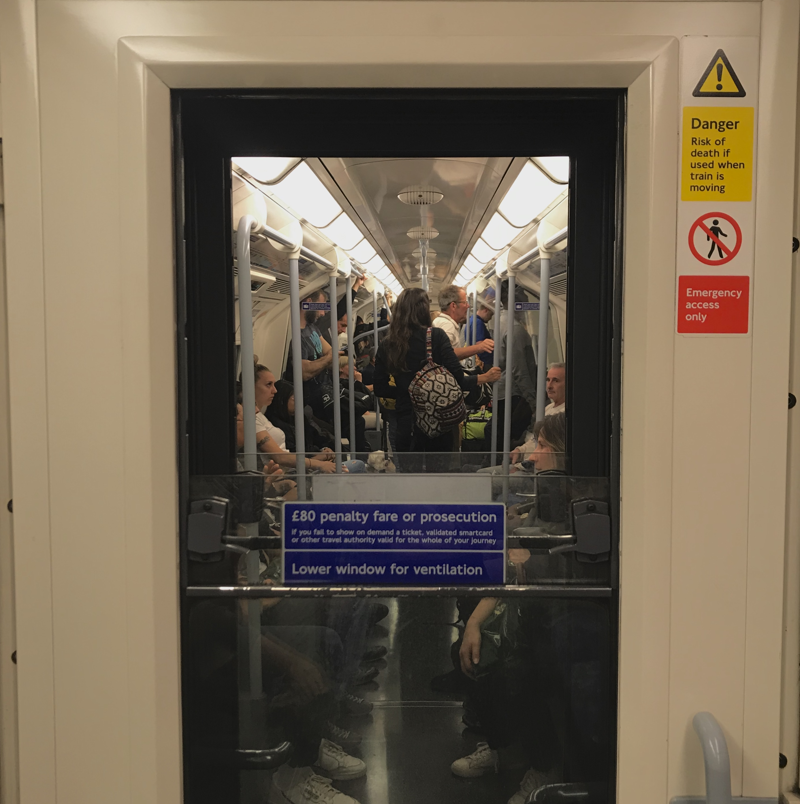

- LONDON
- PARIS
- BERLIN
Memory Book Part.1
Part of my precious memory in LONDON (2018.06-2019.03)
Where was i live ?
My first cozy flat was WC1N 2AL.
That place is nearby russel square station. And it's also placed at zone 1.
That's the reason that flat was so expansive.
